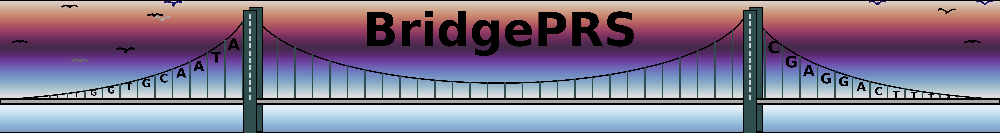
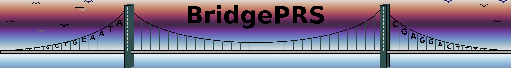

Frequently Asked Questions
We will continue to update this list to address the more common questions.
-
I've receive the following error message, what should I do?
No permissionYou must fix permission.

We will continue to update this list to address the more common questions.
I've receive the following error message, what should I do?
No permission
You must fix permission.